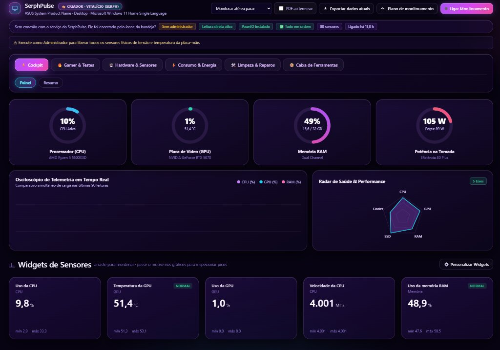

Telemetria Cyberpunk em Tempo Real & Otimizador Gamer Extremo
Monitore mais de 80 sensores físicos da sua CPU, GPU e Placa-Mãe sem piscadas, identifique automaticamente seus jogos da Steam, Xbox e Epic Games com capas oficiais, limpe a Standby RAM e destrave o desempenho máximo do seu PC.
🖥️ Veja o SerphPulse v1.0 por Dentro (Prints Reais)
Interface Glassmorphism em Roxo & Ciano Neon com atualização em tempo real sem piscadas (Zero-Flicker Engine)

🎮 Carrossel de Jogos Otimizados (Detecção Automática com Capas)
O SerphPulse identifica automaticamente seus jogos instalados da Steam, Xbox Game Pass, Epic Games, Battle.net e Riot, trazendo a arte oficial e aplicando limpeza de Standby RAM + prioridade máxima de CPU/GPU!
 🎮 Steam · Epic
+18% 1% Low FPS
🎮 Steam · Epic
+18% 1% Low FPS
 🎮 Steam · Battle.net · Xbox
Zero Micro-Stutter
🎮 Steam · Battle.net · Xbox
Zero Micro-Stutter
 🎮 Steam · Epic Games
Frame Pacing Ultra
🎮 Steam · Epic Games
Frame Pacing Ultra
 🎮 Steam · Epic Games
+15% Estabilidade UE5
🎮 Steam · Epic Games
+15% Estabilidade UE5
 🎮 Steam
60 FPS Cravado
🎮 Steam
60 FPS Cravado
 🎮 Steam
-22% Input Lag
🎮 Steam
-22% Input Lag
 🎮 Steam · Epic · Rockstar
VRAM & RAM Limpa
🎮 Steam · Epic · Rockstar
VRAM & RAM Limpa
 🎮 Steam · Epic · Xbox
+16% FPS Online/RP
🎮 Steam · Epic · Xbox
+16% FPS Online/RP
 🎮 Xbox Game Pass · Steam
Streaming Rápido
🎮 Xbox Game Pass · Steam
Streaming Rápido
 🎮 Steam
CPU Boost Ato 3
🎮 Steam
CPU Boost Ato 3
🔮 +80 Sensores Físicos & Osciloscópio
Leitura direta via LibreHardwareMonitor & PawnIO: temperaturas de cada núcleo, VRM, placa-mãe, saúde S.M.A.R.T. dos SSDs NVMe e osciloscópio multi-linha.
🔥 Detecção de Jogos com Capas Oficiais
Identifica automaticamente seus jogos da Steam, Xbox Game Pass, Epic Games e Riot com a arte oficial do jogo, limpando a memória Standby e ativando o Modo Turbo.
⚡ Liberação Automática em 3 Segundos
Integração nativa com a API oficial do Mercado Pago e Wise Internacional: escaneie o QR Code PIX no próprio app e receba sua chave PRO na hora!
Baixe, extraia o .ZIP e clique em Iniciar_SerphPulse.bat (não precisa instalar .NET!).
- Cockpit com 4 Velocímetros Neon + Osciloscópio
- Monitoramento completo de CPU, GPU, Placa-Mãe, RAM e Discos
- Calculadora de Consumo de Energia em Watts e Reais
- Limpeza básica de arquivos temporários e cache
Desbloqueio vitalício vinculado ao seu PC com liberação automática em 3 segundos dentro do próprio aplicativo!
- Tudo da versão gratuita +
- Modo Gamer Turbo + Capas Oficiais Steam/Xbox/Epic + Standby RAM Purge
- Benchmark Raio-X Gamer com nota de CPU, GPU e SSD
- Teste de Estresse Extremo (CPU, GPU, VRAM e Memória)
- Correções Avançadas de Rede, DISM/SFC e Plano Desempenho Máximo
- Transferência Gratuita se você trocar de PC no futuro
(Ou escaneie o QR Code PIX Oficial com liberação automática em 3s dentro do aplicativo!)
🧠 Sobre o Projeto — 100% Vibe Coding & Engenharia com IA
Desenvolvido por Luan ("Serph") — formado na área de Desenvolvimento de Sistemas — que decidiu criar o SerphPulse v1.0 como um experimento prático de engenharia 100% IA / Vibe Coding: unindo direção técnica de arquitetura de software com Inteligência Artificial para construir uma aplicação real de baixo nível (sensores físicos de hardware, otimização de memória do Windows, criptografia anti-vazamento por HWID e pagamentos automatizados em tempo real).